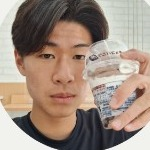
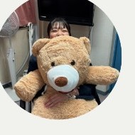
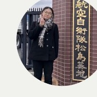
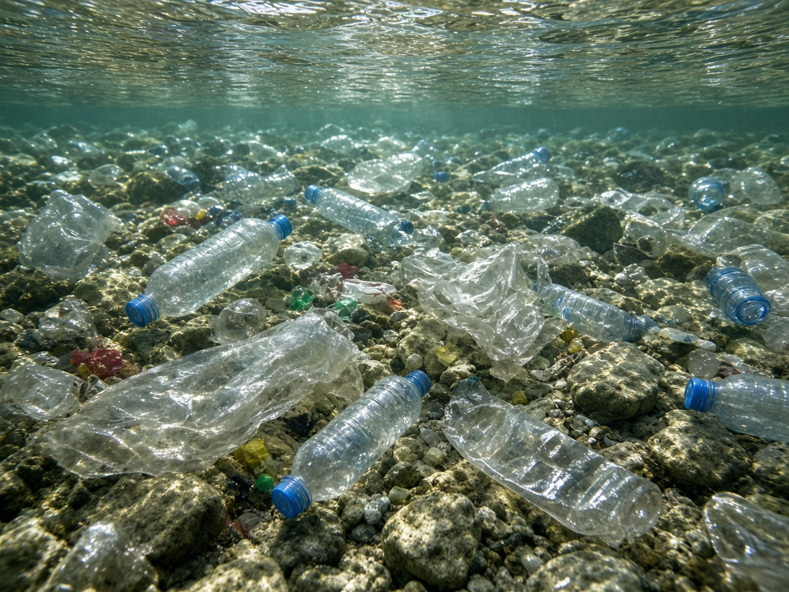
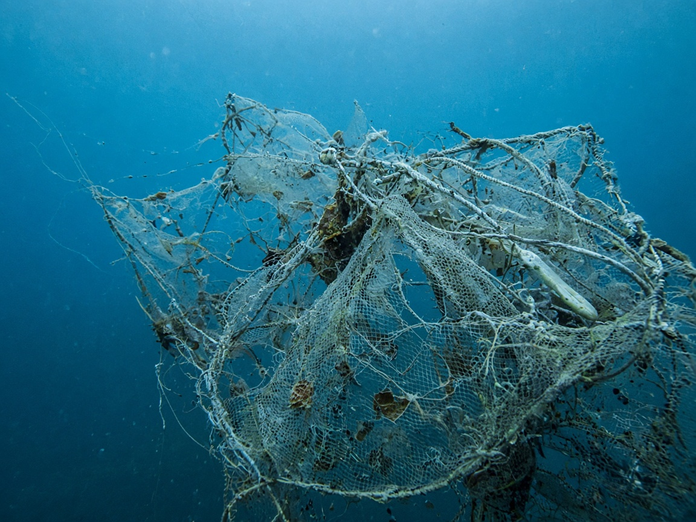
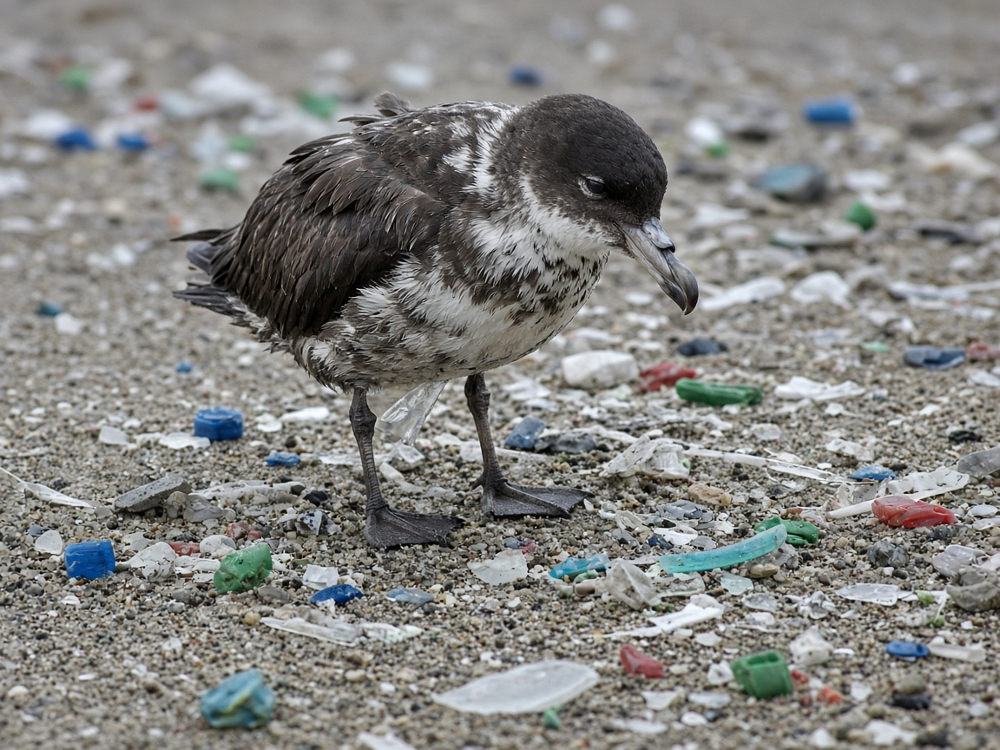

About Us
Team Hatti is an environmental protection group dedicated to reducing plastic waste and understanding its impact on our ecosystems. We combine field research, data analysis, and community awareness to confront one of the most pressing environmental challenges of our time: plastic pollution.
Meet the Team
Group 4 — Team Hatti
Sing Yaw
シン
Sarawak, Malaysia
Bounsou
ブンスー
Vientiane, Laos
Takumi Sato
佐藤 匠
Tsukubamirai, Ibaraki
Rinsei Sato
佐藤
Mito, Ibaraki

Saiki
松延 才輝
Ami, Ibaraki

Rino
柏木 璃乃
Tsukuba, Ibaraki

Natsune
山本 夏寧
Kasama, Ibaraki
Dipesh Satav
サトウ ディペシュ
Mentor · Mumbai, India
Research Focus Areas

Groundwater Pollution
Investigating and analyzing how plastics contaminate groundwater, and developing methods to measure and monitor pollution levels.

Fishing Net Tracking
Tracking discarded fishing nets ("ghost nets") and other plastic-based products to understand their movement and environmental impact.

Plastics in Birds
Studying the presence and quantity of plastics in birds to assess how plastic pollution travels through and affects wildlife.
Our Presentation
Explore the slides from our project presentation on tackling plastic pollution.
No slides found yet.
Export your Canva presentation as PNG (all pages) and add the images to a
slides/ folder, named slide-1.png, slide-2.png, and so on.
Get Involved
We welcome collaborators, researchers, and volunteers who share our passion for protecting the environment. If you would like to contribute or learn more, reach out through our repository.
Visit Our GitHub